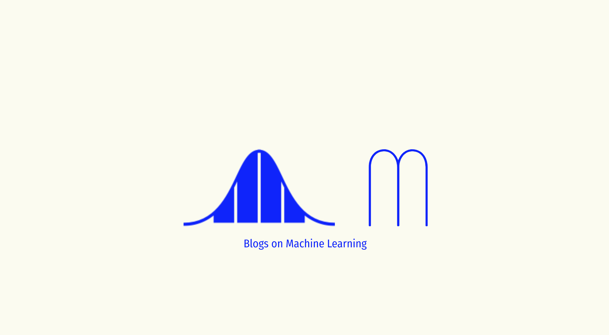

What is new in Stable Diffusion 2.0
Async IO in Python
Learn How to load image data with TorchData and train Image classifier
Learn how to write a custom training loop in pure PyTorch, create custom torch Dataset class, compute metrics for model performance, and Scale the Training on any hardware like GPU, TPU, IPU or Distributed Training with LightningLite.
A tutorial on Pix2Pix Conditional GANs and implementation with PyTorch
A beginner-friendly tutorial on DCGAN with PyTorch to generate Fake celebrity images with CelebA dataset.
Learn to deploy Python Tensorflow & FastAPI Web app on Heroku Cloud in 5 minutes.
Tutorial on FastAPI - high performance asynchronous framework for faster development of production ready APIs.
Theory and examples of Probability vs Likelihood vs Maximum Likelihood
Normalization techniques and effect of normalization.
Building scalabale data input pipeline with Tensorflow tf.data.
A tutorial on Linear Regression from scratch in Python
EfficientDet, highly efficient and scalable state of the art object detection model developed by Google Research, Brain Team.
Image Classification with Tensorflow 2.x.
Learn to create Face Recognition system from scratch